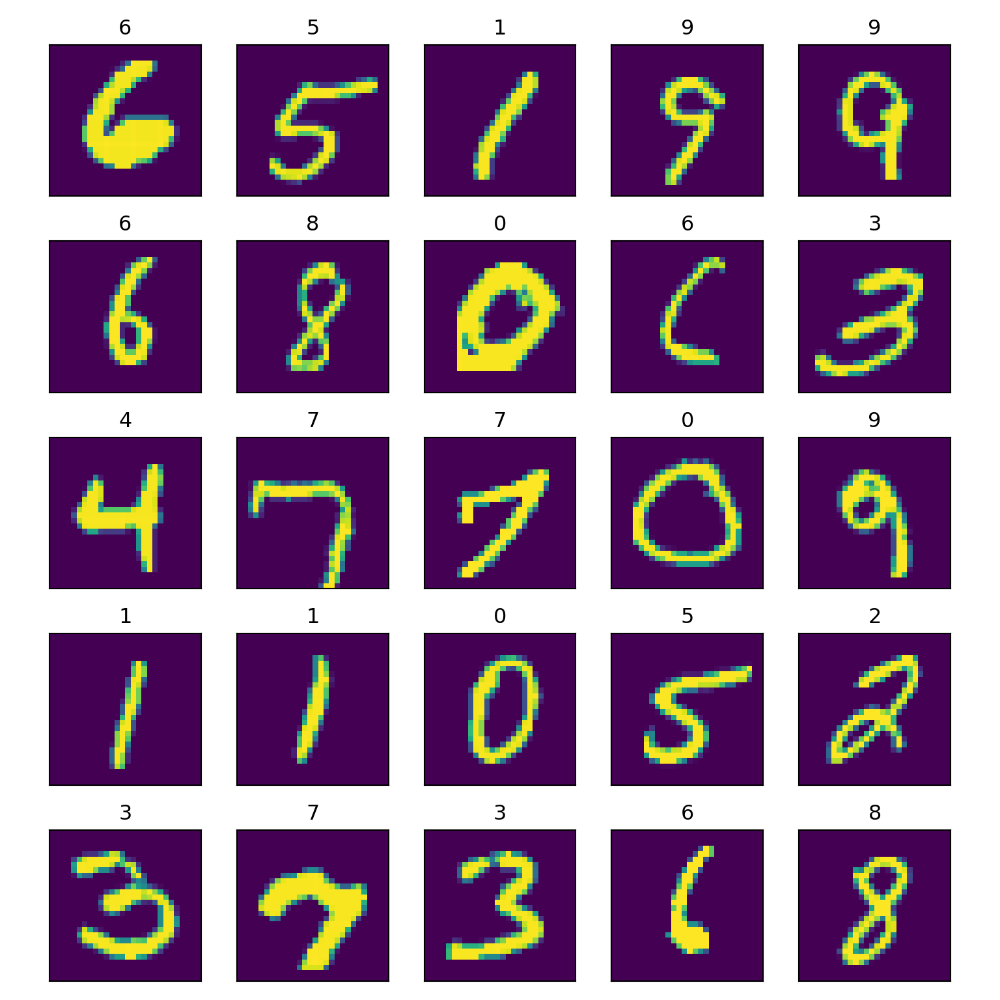
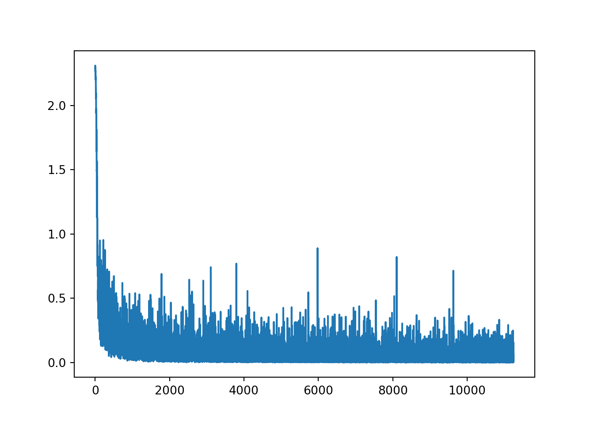
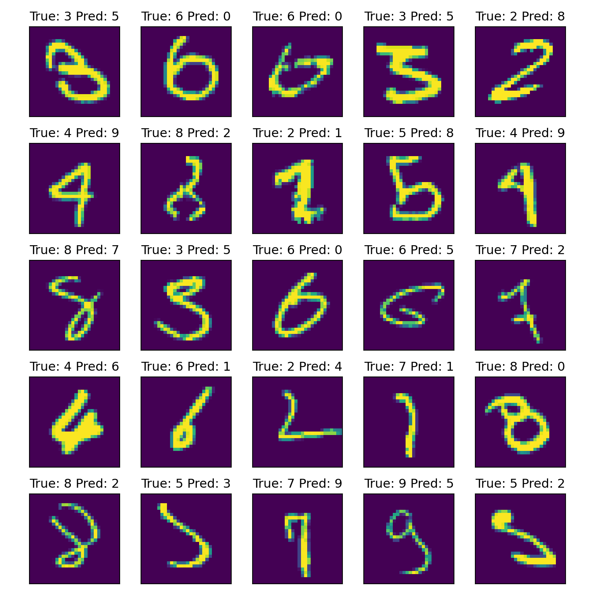

2 CNN on MNIST
Let's load some modules that we will use in this lab.
import torch
from torch import nn
import torch.nn.functional as F
from torch import optim
from torch.utils.data import DataLoader
import torchvision
import torchvision.datasets as datasets
import torchvision.transforms as transformsThe MNIST dataset can be downloaded directly from torchvision.datasets.
train_dataset = datasets.MNIST(root="dataset/", download=True, train=True, transform=transforms.ToTensor())
test_dataset = datasets.MNIST(root="dataset/", download=True, train=False, transform=transforms.ToTensor())We can visualise some images to get a sense of the dataset.
import matplotlib.pyplot as plt
import numpy as np
# set up a grid of images
fig, axs = plt.subplots(5, 5, figsize=(8, 8), tight_layout=True)
fig.subplots_adjust(hspace = .5, wspace=.005)
axs = axs.ravel()
# transform image tensor from (C,H,W) format in Pytorch to (H,W,C) format for visualisation
def transform_image(img):
npimg = img.numpy()
npimg = np.transpose(npimg, (1, 2, 0))
return npimg
# plot 25 images selected at random
for i in range(25):
# choose a random image
j = np.random.randint(0, len(train_dataset))
image, label = train_dataset[j]
image = transform_image(image)
# show the image and display its category
axs[i].imshow(image)
axs[i].set_title(label)
# turn off grids and axis labels
axs[i].grid(False)
axs[i].get_xaxis().set_visible(False)
axs[i].get_yaxis().set_visible(False)
plt.show()
## (28, 28, 1)As shown in the image and python output (image.shape), these images are grayscale (with only one channel) and have a size of 28x28 pixels.
Task
- Using the help function on PyTorch, construct a CNN with the following architecture:
- The CNN contains two convolutional layers.
- The first convolutional layer uses 8 kernels, each with a kernel size of 3x3. Additionally, set the stride to 1 and add padding so that the output features have the same size as the input image.
- The second convolutional layer uses 16 kernels, each with a kernel size of 3x3. The stride and padding are the same as in the first convolutional layer.
- After each convolutional layer, apply the rectified linear activation function, followed by a max-pooling layer. The max-pooling layer has a kernel size of 2x2 and a stride of 2.
- After completing the convolution operations, add a fully connected layer with a linear activation function and an output dimensionality of 10 (for classifying 10 digits).
class simpleCNN(nn.Module):
def __init__(self):
super(simpleCNN, self).__init__()
# 1st convolutional layer
self.conv1 = nn.Conv2d(in_channels=1, out_channels=8, kernel_size=3, padding="same")
# Max pooling layer
self.pool = nn.MaxPool2d(kernel_size=2, stride=2)
# 2nd convolutional layer
self.conv2 = nn.Conv2d(in_channels=8, out_channels=16, kernel_size=3, padding="same")
# Fully connected layer
self.fc1 = nn.Linear(16 * 7 * 7, 10)
# Input image has a size of 28*28;
# After first convolution and pooling, output size is 14*14;
# After second convolution and pooling, output size is 7*7.
# This leads to the input dimensionality of 16 (channels) * 7*7 (feature size)
def forward(self, x):
x = F.relu(self.conv1(x)) # Apply first convolution and ReLU activation
x = self.pool(x) # Apply max pooling
x = F.relu(self.conv2(x)) # Apply second convolution and ReLU activation
x = self.pool(x) # Apply max pooling
x = torch.flatten(x, 1) # Flatten the tensor
x = self.fc1(x) # Apply fully connected layer
return x
model = simpleCNN()- Train this simple CNN on the training dataset. You may revise Lab 9 on creating mini-batches for training data, defining loss function and optimisation strategy, and then training a neural network using for-loop.
# Create mini-batches for training and test data
batch_size = 32
train_loader = DataLoader(dataset=train_dataset, batch_size=batch_size, shuffle=True)
test_loader = DataLoader(dataset=test_dataset, batch_size=batch_size, shuffle=False)
# Define the loss function
criterion = nn.CrossEntropyLoss()
# Define the optimizer
optimizer = optim.Adam(model.parameters(), lr=0.001)
num_epochs = 6
loss_history = []
# Train the CNN
for epoch in range(num_epochs):
running_loss = 0.0
for i, data in enumerate(train_loader, 0):
# get the inputs; data is a list of [inputs, labels]
inputs, labels = data
# zero the parameter gradients
optimizer.zero_grad()
# forward + backward + optimize
outputs = model(inputs)
loss = criterion(outputs, labels)
loss.backward()
optimizer.step()
# print statistics
running_loss += loss.item()
loss_history.append(loss.item())
if i % 500 == 399: # print every 2000 mini-batches
print(f'[{epoch + 1}, {i + 1:5d}] loss: {running_loss / 400:.3f}')
running_loss = 0.0## [1, 400] loss: 0.593
## [1, 900] loss: 0.243
## [1, 1400] loss: 0.163
## [2, 400] loss: 0.089
## [2, 900] loss: 0.104
## [2, 1400] loss: 0.102
## [3, 400] loss: 0.067
## [3, 900] loss: 0.079
## [3, 1400] loss: 0.068
## [4, 400] loss: 0.051
## [4, 900] loss: 0.063
## [4, 1400] loss: 0.062
## [5, 400] loss: 0.037
## [5, 900] loss: 0.061
## [5, 1400] loss: 0.052
## [6, 400] loss: 0.041
## [6, 900] loss: 0.048
## [6, 1400] loss: 0.045
- Use the trained CNN to predict the class on test data and calculate the correct classification rate.
## simpleCNN(
## (conv1): Conv2d(1, 8, kernel_size=(3, 3), stride=(1, 1), padding=same)
## (pool): MaxPool2d(kernel_size=2, stride=2, padding=0, dilation=1, ceil_mode=False)
## (conv2): Conv2d(8, 16, kernel_size=(3, 3), stride=(1, 1), padding=same)
## (fc1): Linear(in_features=784, out_features=10, bias=True)
## )with torch.no_grad():
for images, labels in test_loader:
# calculate outputs by running images through the network
outputs = model(images)
# the class with the highest energy is what we choose as prediction
_, predicted = torch.max(outputs, 1)
total += labels.size(0)
correct += (predicted == labels).sum().item()
print(f'Accuracy of the network on the 10000 test images: {100 * correct // total} %')## Accuracy of the network on the 10000 test images: 98 %Our model achieves a very high correct classification rate, which is not surprising as MNIST is a relatively easy dataset.
We can visualise a few misclassified samples to examine where the mistakes occur.
# set up a grid of images
fig, axs = plt.subplots(5, 5, figsize=(8, 8), tight_layout=True)
fig.subplots_adjust(hspace = .5, wspace=.005)
axs = axs.ravel()
i = 0
model.eval()## simpleCNN(
## (conv1): Conv2d(1, 8, kernel_size=(3, 3), stride=(1, 1), padding=same)
## (pool): MaxPool2d(kernel_size=2, stride=2, padding=0, dilation=1, ceil_mode=False)
## (conv2): Conv2d(8, 16, kernel_size=(3, 3), stride=(1, 1), padding=same)
## (fc1): Linear(in_features=784, out_features=10, bias=True)
## )with torch.no_grad():
for images, labels in test_loader:
outputs = model(images)
_, predicted = torch.max(outputs, 1)
idx_incorrect = np.where((predicted != labels).numpy())
if len(idx_incorrect[0]) != 0:
idx_incorrect = idx_incorrect[0][0]
image = transform_image(images[idx_incorrect])
axs[i].imshow(image)
axs[i].set_title(f"True: {int(labels[idx_incorrect].numpy())} "
f"Pred: {int(predicted[idx_incorrect].numpy())}")
axs[i].grid(False)
axs[i].get_xaxis().set_visible(False)
axs[i].get_yaxis().set_visible(False)
i += 1
if i == 25:
break## <matplotlib.image.AxesImage object at 0x000001C6480CC510>
## Text(0.5, 1.0, 'True: 3 Pred: 5')
## <matplotlib.image.AxesImage object at 0x000001C6480EB010>
## Text(0.5, 1.0, 'True: 6 Pred: 0')
## <matplotlib.image.AxesImage object at 0x000001C64823D310>
## Text(0.5, 1.0, 'True: 6 Pred: 0')
## <matplotlib.image.AxesImage object at 0x000001C6480CA290>
## Text(0.5, 1.0, 'True: 3 Pred: 5')
## <matplotlib.image.AxesImage object at 0x000001C64825B850>
## Text(0.5, 1.0, 'True: 2 Pred: 8')
## <matplotlib.image.AxesImage object at 0x000001C6482B11D0>
## Text(0.5, 1.0, 'True: 4 Pred: 9')
## <matplotlib.image.AxesImage object at 0x000001C6480DA110>
## Text(0.5, 1.0, 'True: 8 Pred: 2')
## <matplotlib.image.AxesImage object at 0x000001C64F9233D0>
## Text(0.5, 1.0, 'True: 2 Pred: 1')
## <matplotlib.image.AxesImage object at 0x000001C648078150>
## Text(0.5, 1.0, 'True: 5 Pred: 8')
## <matplotlib.image.AxesImage object at 0x000001C648176290>
## Text(0.5, 1.0, 'True: 4 Pred: 9')
## <matplotlib.image.AxesImage object at 0x000001C64F67BBD0>
## Text(0.5, 1.0, 'True: 8 Pred: 7')
## <matplotlib.image.AxesImage object at 0x000001C64823E0D0>
## Text(0.5, 1.0, 'True: 3 Pred: 5')
## <matplotlib.image.AxesImage object at 0x000001C64F84A490>
## Text(0.5, 1.0, 'True: 6 Pred: 0')
## <matplotlib.image.AxesImage object at 0x000001C64F874110>
## Text(0.5, 1.0, 'True: 6 Pred: 5')
## <matplotlib.image.AxesImage object at 0x000001C64F89D450>
## Text(0.5, 1.0, 'True: 7 Pred: 2')
## <matplotlib.image.AxesImage object at 0x000001C64F926190>
## Text(0.5, 1.0, 'True: 4 Pred: 6')
## <matplotlib.image.AxesImage object at 0x000001C64F6D7390>
## Text(0.5, 1.0, 'True: 6 Pred: 1')
## <matplotlib.image.AxesImage object at 0x000001C64F950C90>
## Text(0.5, 1.0, 'True: 2 Pred: 4')
## <matplotlib.image.AxesImage object at 0x000001C64F8E2810>
## Text(0.5, 1.0, 'True: 7 Pred: 1')
## <matplotlib.image.AxesImage object at 0x000001C64F943110>
## Text(0.5, 1.0, 'True: 8 Pred: 0')
## <matplotlib.image.AxesImage object at 0x000001C64F683110>
## Text(0.5, 1.0, 'True: 8 Pred: 2')
## <matplotlib.image.AxesImage object at 0x000001C64F6AE310>
## Text(0.5, 1.0, 'True: 5 Pred: 3')
## <matplotlib.image.AxesImage object at 0x000001C64F953610>
## Text(0.5, 1.0, 'True: 7 Pred: 9')
## <matplotlib.image.AxesImage object at 0x000001C64F69C890>
## Text(0.5, 1.0, 'True: 9 Pred: 5')
## <matplotlib.image.AxesImage object at 0x000001C64F72EB10>
## Text(0.5, 1.0, 'True: 5 Pred: 2')